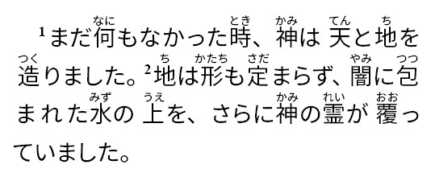

rb
Summary
- Description
-
Ruby gloss. Used to annotate the base text with ruby characters.
- Syntax
-
-
USFM:
\rb_{content}|gloss={glosses}\rb* -
USX:
<char style="rb" gloss={glosses}>{content}</char>- Attributes
-
-
gloss- Ruby glosses (default)
-
glosses-
Ruby gloss characters.
-
If the base text being glossed (
B) is a phrase of multiple Han characters, then the ruby gloss text (gg) may contain multiple elements, one for glossing each of the base text characters making up the phrase. Use a colon:to separate multiple glossing characters. Parts of a phrase gloss may be left empty. Example:\rb BB|"gg:gg"\rb*or\rb BBBB|gg1::gg3:\rb*.
-
-
- Added
-
3.0
Properties
- StyleType
-
Character
- OccursUnder
-
[BookIntroductionContent], [ChapterContent], [SidebarContent], [FootnoteContent], [PeripheralContent] - TextType
-
VerseText
- TextProperties
-
publishable, vernacular
Examples
Example 1. One Han character with a single ruby gloss
\rb 哀|あい\rb*Example 2. Two Han characters with a single ruby phrase gloss
\rb 話賄|はなはなし\rb*Example 3. Phrase gloss with portions of ruby characters separated by a colon
\rb 話賄|はな:はなし\rb*Example 4. Character sequence which includes a non-Han character which is NOT glossed
\rb 定ま|さだ:\rb*Example 5. Un-glossed character occurring between glossed characters in a phrase
\rb 神の子|かみ::こ\rb*Example 6. Genesis 1.1-2 (Japanese Contemporary Bible - Biblica)
\p
\v 1 まだ\rb 何|なに\rb*もなかった\rb 時|とき\rb*、\rb 神|かみ\rb*は\rb 天|てん\rb*と
\rb 地|ち\rb*を\rb 造|つく\rb*りました。
\v 2 \rb 地|ち\rb*は\rb 形|かたち\rb*も\rb 定|さだ\rb*まらず、\rb 闇|やみ\rb*に
\rb 包|つつ\rb*まれた\rb 水|みず\rb*の\rb 上|うえ\rb*を、さらに\rb 神|かみ\rb*の
\rb 霊|れい\rb*が\rb 覆|おお\rb*っていました。
